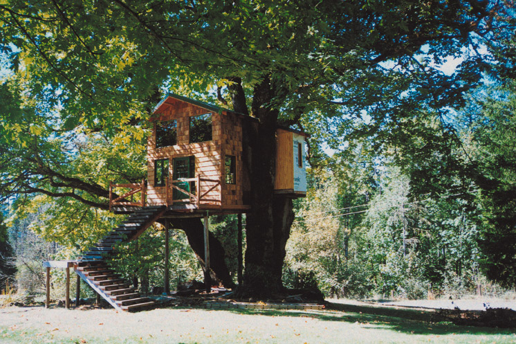

Whether you want a refuge and retreat, a place for peaceful study and meditation, or even a permanent home, building up might be the solution. A treehouse can be just a simple deck with a rope ladder or an ambitious three-story structure with a living area, bedrooms, bathroom and kitchen. (See How to Build a Treehouse for helpful building tips.)
There are now increasing numbers of eco-friendly custom treehouses, which use only salvaged materials and equipment: Water is collected and recycled, photovoltaic panels provide electricity, and double-glazed windows make for comfortable and energy-efficient treehouse living.
Treehouses evoke deep, sometimes strange, emotions. They may remind us of happy childhood days spent building dens and hideaways. Whatever the emotional impact, there is no doubt being in a treehouse is an entirely different experience than "ground living."
And they have a remarkable history. Treehouses have long been used by the people of the South Pacific and Southeast Asia. The Kombai and Korowai of New Guinea traditionally lived in treehouses "like nests of giant birds," according to one visitor. In the 1700s, the English navigator Capt. James Cook recorded an encounter with treetop dwellers in Tasmania.
In the Western world, treehouses were leisure fantasies. The Roman emperor Caligula held sumptuous banquets in a giant tree. During the Renaissance, members of the Medici family vied with each other to create the most magnificent marble treehouse. In Tudor England, Queen Elizabeth I dined in a house in a massive linden tree.
A new dimension of treehouses is their use as quickly erected structures to house activists protesting against tree felling and road building. A renowned example is the "treesit" by Julia Butterfly Hill in a California redwood, begun in 1997. In the United Kingdom, many protest treehouses have come and gone since the first in 1993.
Treehouses today are undergoing a renaissance. Much credit for this must go to pioneers like Peter Nelson ("Mr. Treehouse" to his friends), co-founder of Treehouse Workshop. Nelson has inspired many to take up treehouse building and given enough building advice to get anyone started.
A number of specialist professional companies - Treehouse Workshop and PearTree (TreeHouse) Ltd. in Scotland among them - will undertake the whole process from design to construction. There is even a World Treehouse Association, a network for treehouse dreamers, builders and residents who get together and share experiences at an annual conference at Michael Garnier's Out 'n' About Resort in Oregon.
Karen Grayczk It all started with two maple trees growing at our home in Oregon. I had a dream of building a treehouse in their branches, but heavy fall winds left us with a two-ton branch in the yard and sinking hearts. We called an arborist to cut away the dead wood and install supportive cabling between the branches. He pronounced the trees healthy, so we began buying lumber, and I managed to salvage some pressure treated poles from a nearby hops farm.
We made the foundation out of poles, then put up the basic platform, allowing plenty of room for the tree to carry on growing, and started laying deck boards. A broken branch in one of the maples was cut out to support the second level. The first wall was so heavy it had to be supported on one side by a fallen tree we cut to size.
Slowly but surely the treehouse grew - here a wall, there a can of beer, until the second platform was in place, and we could start building a loft and putting up rafters for the roof.
We bought some windows and a Dutch door from salvage and adapted the final design around them, adding a green metal roof. We also installed a railing around the upper deck and plan to do the same for the stairs. I'm having fun working on the interior, which is to be a riot of jungle-meets-East India decor.
The treehouse was named after the original structure we had as children, built by my father and brothers. We lived then in a wooded area close to Oxbow Park, and after we moved away, we referred to that home as "Oxbow." We called the new treehouse "Oxbow Annex" in memory of my father, who passed away two years ago.
John-san Our family treehouse, built of old miso barrels, sits on the grounds of a Buddhist temple within the forests of a national park. We always wanted our treehouse to be distinctly Japanese, but even more important to me was that it be made from recycled materials and its creation involve a wide community of people. The fact that it exists at all is a great tribute to the scores of volunteers who helped make it possible.
From the start, the project attracted a lot of attention. The very idea of a livable, environmentally friendly treehouse, built by a foreigner and on temple lands ... people thought I was crazy
Part of our treehouse statement was about recycling wood, and that's where the barrels came in. The miso and soy sauce industry has been replacing its big wooden barrels with stainless steel ones, and because of their overpowering smell, the old barrels have usually been burned rather than recycled.
We wanted to show, with ingenuity and elbow grease, they could become a valuable building material. My wife, Hiroko, and I realized the barrels would be perfect for a treehouse, as each was just the right size for a circular room!
The first task was to get the barrels from the factory, hose them down thoroughly, and hoist them up. We then built a wooden platform deck which we supported with 200 recycled telephone poles. (We always avoided using nails in the trees.) We then placed the barrels on the deck to form individual rooms. These were imaginatively designed by Hiroko, who must take all the credit for making the treehouse a home. If it had just been me, it would have ended up like something Tarzan would have lived in.
The treehouse is roughly pentagonal, and is supported on each corner by a different tree. Each side is a slightly different length to accommodate the five supporting trees, and the house sways in strong winds.
Growing through the center is a tsubaki tree, which flowers bright red in winter. Our children like to play in it and hang toys and paintings in its branches. In summer the space around the tree creates natural air conditioning: A sunlight heated pipe in the roof draws cool air into the house from around the tree trunk.
The second floor has no walls. Through the skylight we can track the course of the moon, stars and seasons and move our bed to follow them.
I find trees and treehouses seem to bring out the best in people - one reason I founded a tree-climbing school. The school has now helped more than 1,400 people enjoy the treetops. The initial inspiration came from a special friend, Mrs. Hikosaka. I first spotted her from 80 feet (24 meters) up in the treetops, as two assistants struggled to push her small, frail body in a wheelchair across the forest floor.
When she reached my tree, she half-yelled, half-whispered with all her strength, "I would give everything in the world to leave this wheelchair and sit in the treetops with you!" A year later Mrs. Hikosaka and I were shedding tears of joy in the treetop. Inside that frail, mangled body was a strong and courageous woman who had learned to climb trees.
David Kibbey In 1984 I was approached by a couple, Larry and Stephanie Engel, who wanted to build a treehouse for their children, Laura and Brian. Larry, an attorney, was all thumbs when it came to carpentry. Stephanie is a dreamer, poet, songwriter and composer who was inspired to create a spirited fantasy environment for their children. I agreed to design and build the treehouse, on the condition that the whole family would participate in the process.
A magnificent old oak tree next to their California home, already host to chirping birds, chattering squirrels and teeming insect life cried out for a treehouse. Together, we built a house of 100 square feet (9 square meters) boasting electrical circuits, a custom-made ladder, a deck and a hand-built Dutch door. The oak grows right up through the roof and out of one of the windows. I had to invent "tree gaskets" made of clear vinyl and rubber stamping as a way of sealing out the extremes of weather.
Work began with the "consultation phase," which consisted of the children climbing the tree. After thinking hard about what they wanted, Laura, 5, and Brian, 2, had lots of ideas and definite preferences. They asked for the entrance to be on the east, and their favorite curved branch to be "furniture" inside the house. They hoped the ladder would retract, and that they would be able to climb the tree from deck to roof. Additionally, they wanted a flat roof to allow for future expansion to a second floor, where we planned a spiral slide and a fireman's pole from the upper level to the deck.
The design and placement evolved through a natural sequence of events. We built the deck first. Then we walked it, measured it and thought about it, until the exact place and shape for the house grew from our combined imaginations. Larry helped carry recycled California redwood timbers up the hill and into the tree. Stephanie inspired the whole project. For my part, I was very careful to maintain the health of the tree and to keep our enthusiasm rooted in practicality.
The light fixtures, the electrical parts, the windows, the structural beams, the wood trim, much of the hardware and other features were all salvaged from contractors' demolition debris and spare parts. The house was built of painted plywood over a frame of 2-by-4 beams. We also used batt insulation and composition roll roofing.
For the access stair/ladder we made handrails from recycled copper piping and fittings. The base structure is balanced in the bottom notch of the oak tree, and the extremities of the deck and the house are hung with adjustable cables from heavy branches above.
To prevent the tree from being chafed, we put rubber hosepipe over the cables. We also ensured that no nails or bolts would penetrate the wood of the tree.
After the deck and house were completed, I was concerned there might be too much wind sway, since the weight of the house was held by the branches. I therefore added two long posts, resting on pier blocks on the ground beneath, to support the heavy end of the deck. The entire structure is adjustable by bolts, allowing for tree growth and settling.
Through the years, the house has served as a play- and guesthouse, meditation room, retreat, rabbit's home, storehouse and fantasy space. I still get a shiver of excitement when I recall my part in leading the joyful creation of this delightful and spirited little treehouse, harmoniously nestled among the flora and fauna of a California hillside.
We still have videotape of a 5-year-old Brian playing in the treehouse with a friend. His conversation with this young pal is fascinating, as he describes his "spiky little invisible friends" who live in the bark of the tree running through the middle of the house. The young boys whispered all the time, so as not to disturb the invisible creatures.
Sam Isaac Edwards I started building treehouses when I was about 5 or 6. I didn't read a book ... I just built. As a child, what little money I could gather together I spent not on candy and pop, but on nails and other construction supplies.
Over the years I created dozens of multilevel structures using a triple-tree triangulated design. However, my permanent residence, "Sam's treehouse," wasn't planned at all. I'd moved back to Calhoun, Georgia, after some years out West, when an old friend asked me to start a restaurant with him. I agreed, but told him I'd need a place to write. "Go up in the woods behind the restaurant and build," he replied.
With little thought to the location (right in the middle of town), I chose a 150-year-old, 60-feet (18-meters) pin oak, sunk eight wooden supports under its north limb, and built a 8-by-16-feet (2.5-by-5-meters) box enveloping a single limb. Then I got really carried away. The result was a 600-square-feet (56-square-meters) treehouse on three levels, with limbs in every room. I simply built around them, with no design in mind.
Construction began in 1991. I scrounged old materials from wherever I could find them: windows from the old train depot, rusted tin from barns, chalkboard paneling from a closed school, pine flooring from a former slave cabin.
Once it had grown to livable proportions, I found myself in a house with no utilities. So I had to lobby the town's decision-makers to assist me. When I was finally granted water and power, possibly because my treehouse seemed to bring smiles to troubled faces, I told the city inspector I regretted placing him in such a position, and the building was the "evolution of a mistake." The inspector replied, "I don't think that could be put any better."
Soon afterward, a local farmer war discovered growing marijuana on plywood beds in an industrial building. When the "wacky 'backy" had been removed by the police, I was offered the plywood. Two weeks later I had managed to convert them into a library and sitting room attached to the south end of the treehouse.
Later on, as I was looking at the treehouse and wondering what to do next, "airplane" simply flew into my mind! The 30-feet (9-meters) wreck came from an air salvage yard. At about $300, it's the only addition I ever had to pay real money for.
A few months after the plane had evolved into a bedroom, I found an abandoned ski boat behind a friend's warehouse. He offered it to me, and not wanting to offend, I took it. It became a very pleasant summer bedroom.
In the spring of 2000, the same friend and I were out together when I noticed a nautical craft sitting in front of a marine supplier. It looked like a shabby submarine with a collapsed conning tower. I discovered it was a prop built for a 1960s Elvis movie.
After sinking another four railroad crossties, I attached the sub to the north end, perpendicular to the airplane, where it is being converted into a shower and bathroom. Each extension is situated at a slightly different elevation; none obstructs the view of the others. I like to think this lends balance to the imbalance.
I never use new materials when salvage is available. Every "adopted child" of this treehouse brings its own biography. The result is a unique and quite amazing multi-story structure.
See the Image Gallery for interior and exterior photographs of these creative custom treehouses.
|
CHELSEA GREEN/ROGER WEBSTER A house on the ground is just a house. But treehouse living? It may seem like an idea in the realm of favorite childhood fantasies, but a family treehouse could be a reality for you. |
CHELSEA GREEN/DAVE YOUNG This striking nighttime shot is of a custom treehouse built in the crown of a large tree. |
 CHELSEA GREEN/KAREN GRAYCZK Karen Grayczk’s treehouse sits perfectly in the crook of a separated trunk … a perfect and stable fit. |
|
CHELSEA GREEN/JOHN GATHRIGHT Using miso barrels was a radical idea, but it worked. “To be honest,” says John-san, “I cannot imagine living in a groundhouse any longer.” |
CHELSEA GREEN/JOHN GATHRIGHT John-san reads the paper on a swing outside his custom treehouse. |
CHELSEA GREEN/JOHN GATHRIGHT The inside view of John-san's custom miso barrel treehouse. |
|
CHELSEA GREEN/DAVID KIBBEY Larry Engel’s beautifully detailed split-level treehouse sits in an old oak tree. |
CHELSEA GREEN/DAVID KIBBEY Larry Engel, an attorney who is thums up about carpentry, works on his treehouse. |
CHELSEA GREEN/DAVID KIBBEY Engel’s house is made mainly of painted plywood. |
|
CHELSEA GREEN/SAM EDWARDS Sam Isaac Edwards' amazing home is made entirely of salvaged materials - including an airplane! |
CHELSEA GREEN/SAM EDWARDS The interior of Edwards' treehouse, complete with a large limb. |
CHELSEA GREEN/SAM EDWARDS A salvaged airplane has been creatively transformed into a bedroom space. |